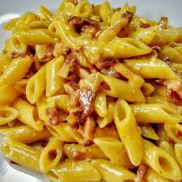

Penne alla carbonara

Description
Indulge in the rich flavors of Italy with our authentic penne alla carbonara recipe. This classic dish features al dente penne pasta tossed in a creamy sauce made with eggs, Pecorino Romano cheese (or Parmesan cheese), guanciale (or pancetta), and freshly cracked black pepper.
It's simple, yet decadent, perfect for satisfying your cravings any day of the week. Buon appetito!
Ingredients
- 4 ounces (about 120g) penne pasta
- 2 large eggs
- 1/2 cup (50g) grated Pecorino Romano cheese (or Parmesan cheese)
- 2 ounces (about 60g) pancetta or guanciale, diced
- Salt, to taste
- Freshly ground black pepper, to taste
Please keep in mind that serving sizes are estimated for two people and may require adjustment based on personal preferences and appetites. Cooking times and ingredient quantities may vary depending on individual factors. Enjoy your meal!
Steps
-
Cook the pasta: Bring a large pot of salted water to a boil. Add the penne pasta and cook according to package instructions until al dente. Reserve about 1/2 cup of pasta water before draining.
-
Separate the yolks: Carefully crack the eggs and separate the yolks from the whites. Place the yolks in a mixing bowl, and set aside the whites for another use or discard them.
-
Prepare the sauce: While the pasta is cooking, in a mixing bowl, whisk together the yolks and grated cheese until well combined. Season with a pinch of salt and freshly ground black pepper.
-
Cook the guanciale: In a skillet over medium heat, cook the diced guanciale until crispy and golden brown. Remove from heat.
-
Combine everything: Once the pasta is cooked, drain it and add it to the skillet with the cooked guanciale. Toss everything together until well mixed.
-
Add the sauce: Quickly pour the egg and cheese mixture over the hot pasta and toss continuously until the eggs thicken from the heat of the pasta. If the sauce seems too thick, add some of the reserved pasta water a little at a time until desired consistency is reached.
-
Serve: Divide the penne alla carbonara between two plates or bowls. Garnish with freshly ground black pepper, serve immediately and enjoy!
Note: It's important to toss the sauce with the hot pasta off the heat to avoid scrambling the eggs. Additionally, if you prefer a saucier texture, you can increase the amount of reserved pasta water added to the sauce. Adjust seasoning to taste before serving.